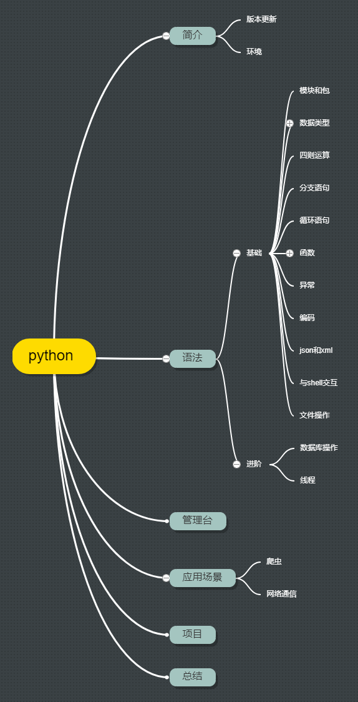

<!DOCTYPE HTML>
<html lang="zh-CN">
<head><meta name="generator" content="Hexo 3.8.0">
    <!--Setting-->
    <meta charset="UTF-8">
    <meta name="viewport" content="width=device-width, user-scalable=no, initial-scale=1.0, maximum-scale=1.0, minimum-scale=1.0">
    <meta http-equiv="X-UA-Compatible" content="IE=Edge,chrome=1">
    <meta http-equiv="Cache-Control" content="no-siteapp">
    <meta http-equiv="Cache-Control" content="no-transform">
    <meta name="renderer" content="webkit|ie-comp|ie-stand">
    <meta name="apple-mobile-web-app-capable" content="我的博客 - blog">
    <meta name="apple-mobile-web-app-status-bar-style" content="black">
    <meta name="format-detection" content="telephone=no,email=no,adress=no">
    <meta name="browsermode" content="application">
    <meta name="screen-orientation" content="portrait">
    <link rel="dns-prefetch" href="https://blog.xtcgch.ink">
    <!--SEO-->

<meta name="description" content="脑容量不够，笔记来凑">


<meta name="robots" content="all">
<meta name="google" content="all">
<meta name="googlebot" content="all">
<meta name="verify" content="all">
    <!--Title-->


<title>python学习 | 我的博客 - blog</title>


    <link rel="alternate" href="/atom.xml" title="我的博客 - blog" type="application/atom+xml">


    <link rel="icon" href="https://blog.xtcgch.ink/img/background/海绵宝宝.ico">

    


<link rel="stylesheet" href="/css/bootstrap.min.css?rev=3.3.7">
<link rel="stylesheet" href="/css/font-awesome.min.css?rev=4.5.0">
<link rel="stylesheet" href="/css/style.css?rev=@@hash">


    


    

</head>

</html>
<!--[if lte IE 8]>
<style>
    html{ font-size: 1em }
</style>
<![endif]-->
<!--[if lte IE 9]>
<div style="ie">你使用的浏览器版本过低，为了你更好的阅读体验，请更新浏览器的版本或者使用其他现代浏览器，比如Chrome、Firefox、Safari等。</div>
<![endif]-->

<body>
    <header class="main-header" style="background-image:url(https://blog.xtcgch.ink/img/head-bg.jpg)">
    <div class="main-header-box">
        <a class="header-avatar" href="/" title="unistd68">
            
        </a>
        <div class="branding">
        	<!--<h2 class="text-hide">Snippet主题,从未如此简单有趣</h2>-->
            
                <h2> 脑容量不够，笔记来凑 </h2>
            
    	</div>
    </div>
</header>
    <nav class="main-navigation">
    <div class="container">
        <div class="row">
            <div class="col-sm-12">
                <div class="navbar-header"><span class="nav-toggle-button collapsed pull-right" data-toggle="collapse" data-target="#main-menu" id="mnav">
                    <span class="sr-only"></span>
                        <i class="fa fa-bars"></i>
                    </span>
                    <a class="navbar-brand" href="https://blog.xtcgch.ink">我的博客 - blog</a>
                </div>
                <div class="collapse navbar-collapse" id="main-menu">
                    <ul class="menu">
                        
                            <li role="presentation" class="text-center">
                                <a href="https://blog.xtcgch.ink/"><i class="fa "></i>主页</a>
                            </li>
                        
                            <li role="presentation" class="text-center">
                                <a href="https://blog.xtcgch.ink/categories/原理/"><i class="fa "></i>原理</a>
                            </li>
                        
                            <li role="presentation" class="text-center">
                                <a href="https://blog.xtcgch.ink/categories/代码/"><i class="fa "></i>代码</a>
                            </li>
                        
                            <li role="presentation" class="text-center">
                                <a href="https://blog.xtcgch.ink/categories/热点/"><i class="fa "></i>热点</a>
                            </li>
                        
                            <li role="presentation" class="text-center">
                                <a href="https://blog.xtcgch.ink/categories/知识导图/"><i class="fa "></i>知识导图</a>
                            </li>
                        
                            <li role="presentation" class="text-center">
                                <a href="https://blog.xtcgch.ink/categories/其他/"><i class="fa "></i>其他</a>
                            </li>
                        
                            <li role="presentation" class="text-center">
                                <a href="https://blog.xtcgch.ink/archives/"><i class="fa "></i>时间轴</a>
                            </li>
                        
                    </ul>
                </div>
            </div>
        </div>
    </div>
</nav>
    <section class="content-wrap">
        <div class="container">
            <div class="row">
                <main class="col-md-8 main-content m-post">
                    <p id="process"></p>
<article class="post">
    <div class="post-head">
        <h1 id="python学习">
            
	            python学习
            
        </h1>
        <div class="post-meta">
    
    
    <span class="categories-meta fa-wrap">
        <i class="fa fa-folder-open-o"></i>
        <a href="https://blog.xtcgch.ink/categories/原理">
            原理
        </a>
    </span>
    

    
    <span class="fa-wrap">
        <i class="fa fa-tags"></i>
        <span class="tags-meta">
            
                
                    <a href="https://blog.xtcgch.ink/tags/python" title="python">
                        python
                    </a>
                
            
        </span>
    </span>
    

    
        
        <span class="fa-wrap">
            <i class="fa fa-clock-o"></i>
            <span class="date-meta">2020/01/27</span>
        </span>
        
    
</div>

            
            
    </div>
    
    <div class="post-body post-content">
        <p><strong>摘要：</strong>记录python的学习过程！</p>
<a id="more"></a>
<hr>
<h2 id="脑图"><a href="#脑图" class="headerlink" title="脑图"></a>脑图</h2><p></p>
<hr>
<h2 id="1、定义引用的python处理器"><a href="#1、定义引用的python处理器" class="headerlink" title="1、定义引用的python处理器"></a><table><tr><td bgcolor="#C7C7C7">1、定义引用的python处理器</td></tr></table></h2><figure class="highlight plain"><table><tr><td class="gutter"><pre><span class="line">1</span><br></pre></td><td class="code"><pre><span class="line">#!/usr/bin/python</span><br></pre></td></tr></table></figure>
<h2 id="2、引用包和模块"><a href="#2、引用包和模块" class="headerlink" title="2、引用包和模块"></a><table><tr><td bgcolor="#C7C7C7">2、引用包和模块</td></tr></table></h2><figure class="highlight plain"><table><tr><td class="gutter"><pre><span class="line">1</span><br><span class="line">2</span><br><span class="line">3</span><br><span class="line">4</span><br><span class="line">5</span><br><span class="line">6</span><br><span class="line">7</span><br><span class="line">8</span><br></pre></td><td class="code"><pre><span class="line">import sys</span><br><span class="line">import commands</span><br><span class="line">import MySQLdb</span><br><span class="line">import csv</span><br><span class="line">import datetime</span><br><span class="line">import time</span><br><span class="line"></span><br><span class="line">import os</span><br></pre></td></tr></table></figure>
<h2 id="3、定义函数"><a href="#3、定义函数" class="headerlink" title="3、定义函数"></a><table><tr><td bgcolor="#C7C7C7">3、定义函数</td></tr></table></h2><figure class="highlight plain"><table><tr><td class="gutter"><pre><span class="line">1</span><br><span class="line">2</span><br><span class="line">3</span><br><span class="line">4</span><br><span class="line">5</span><br></pre></td><td class="code"><pre><span class="line">def get_refund_bills_with_mid(nums):</span><br><span class="line">    data= 12345 + nums</span><br><span class="line">    return nums</span><br><span class="line"></span><br><span class="line">retval = get_refund_bills_with_mid(5)</span><br></pre></td></tr></table></figure>
<h2 id="4、输出"><a href="#4、输出" class="headerlink" title="4、输出"></a><table><tr><td bgcolor="#C7C7C7">4、输出</td></tr></table></h2><ol>
<li><p>屏幕输出</p>
<figure class="highlight plain"><table><tr><td class="gutter"><pre><span class="line">1</span><br></pre></td><td class="code"><pre><span class="line">print (&quot;%s , %d&quot;%(str,intval))</span><br></pre></td></tr></table></figure>
</li>
<li><p>文件输出</p>
<figure class="highlight plain"><table><tr><td class="gutter"><pre><span class="line">1</span><br><span class="line">2</span><br><span class="line">3</span><br></pre></td><td class="code"><pre><span class="line">fo = open(&quot;text.txt&quot;,&quot;w&quot;)</span><br><span class="line">fo.write(&quot;%s , %d&quot;%(str,intval))</span><br><span class="line">fo.close()</span><br></pre></td></tr></table></figure>
</li>
</ol>
<h2 id="5、MYSQL数据库连接"><a href="#5、MYSQL数据库连接" class="headerlink" title="5、MYSQL数据库连接"></a><table><tr><td bgcolor="#C7C7C7">5、MYSQL数据库连接</td></tr></table></h2><ol>
<li><p>引入mysql模块</p>
</li>
<li><p>链接mysql数据库</p>
</li>
</ol>
<figure class="highlight plain"><table><tr><td class="gutter"><pre><span class="line">1</span><br><span class="line">2</span><br><span class="line">3</span><br><span class="line">4</span><br></pre></td><td class="code"><pre><span class="line">posbill_read = MySQLdb.connect(host=&quot;&quot;,user = &quot;&quot;,passwd = &quot;&quot;,use_unicode=True,charset=&apos;utf8&apos;)</span><br><span class="line">cursor_read = posbill_read.cursor()</span><br><span class="line">cursor_read.close()</span><br><span class="line">posbill_read.close()</span><br></pre></td></tr></table></figure>
<ol start="3">
<li>事务的提交和回滚</li>
</ol>
<figure class="highlight plain"><table><tr><td class="gutter"><pre><span class="line">1</span><br><span class="line">2</span><br></pre></td><td class="code"><pre><span class="line">posbill_read.commit()</span><br><span class="line">posbill_read.rollback()</span><br></pre></td></tr></table></figure>
<ol start="4">
<li>获取数据</li>
</ol>
<figure class="highlight plain"><table><tr><td class="gutter"><pre><span class="line">1</span><br><span class="line">2</span><br><span class="line">3</span><br><span class="line">4</span><br></pre></td><td class="code"><pre><span class="line">results = cursor_read.execute(sql)</span><br><span class="line">for one in results:</span><br><span class="line">    data0 = one[0]</span><br><span class="line">        data1 =  one[1]</span><br></pre></td></tr></table></figure>
<h2 id="6、设置全局编码"><a href="#6、设置全局编码" class="headerlink" title="6、设置全局编码"></a><table><tr><td bgcolor="#C7C7C7">6、设置全局编码</td></tr></table></h2><figure class="highlight plain"><table><tr><td class="gutter"><pre><span class="line">1</span><br><span class="line">2</span><br><span class="line">3</span><br></pre></td><td class="code"><pre><span class="line">import sys</span><br><span class="line">reload(sys)</span><br><span class="line">sys.setdefaultencoding(&apos;utf8&apos;) # 设置默认编码格式为&apos;utf-8&apos;</span><br></pre></td></tr></table></figure>
<h2 id="7、map的使用"><a href="#7、map的使用" class="headerlink" title="7、map的使用"></a><table><tr><td bgcolor="#C7C7C7">7、map的使用</td></tr></table></h2><ol>
<li><p>定义</p>
<figure class="highlight plain"><table><tr><td class="gutter"><pre><span class="line">1</span><br></pre></td><td class="code"><pre><span class="line">map_data = &#123;&#125;</span><br></pre></td></tr></table></figure>
</li>
<li><p>赋值</p>
<figure class="highlight plain"><table><tr><td class="gutter"><pre><span class="line">1</span><br><span class="line">2</span><br><span class="line">3</span><br><span class="line">4</span><br></pre></td><td class="code"><pre><span class="line">if key not in map_data:</span><br><span class="line">      map_data[key] = value</span><br><span class="line">else:</span><br><span class="line">      map_data[key] = value2</span><br></pre></td></tr></table></figure>
</li>
<li><p>遍历</p>
<figure class="highlight plain"><table><tr><td class="gutter"><pre><span class="line">1</span><br><span class="line">2</span><br><span class="line">3</span><br></pre></td><td class="code"><pre><span class="line">for key in map_data.keys():</span><br><span class="line">    print key</span><br><span class="line">    print map_data[key]</span><br></pre></td></tr></table></figure>
</li>
</ol>
<h2 id="8、读取配置文件"><a href="#8、读取配置文件" class="headerlink" title="8、读取配置文件"></a><table><tr><td bgcolor="#C7C7C7">8、读取配置文件</td></tr></table></h2><ol>
<li><p>引用包</p>
<figure class="highlight plain"><table><tr><td class="gutter"><pre><span class="line">1</span><br></pre></td><td class="code"><pre><span class="line">import ConfigParser</span><br></pre></td></tr></table></figure>
</li>
<li><p>载配置文件</p>
<figure class="highlight plain"><table><tr><td class="gutter"><pre><span class="line">1</span><br><span class="line">2</span><br></pre></td><td class="code"><pre><span class="line">cf = ConfigParser.ConfigParser()</span><br><span class="line">cf.read(&quot;/home/data/config.properties&quot;)</span><br></pre></td></tr></table></figure>
</li>
<li><p>读取配置节点</p>
<figure class="highlight plain"><table><tr><td class="gutter"><pre><span class="line">1</span><br><span class="line">2</span><br></pre></td><td class="code"><pre><span class="line">ip= cf.get(&quot;node1&quot;, &quot;IP&quot;)</span><br><span class="line">port = cf.get(&quot;node1&quot;, &quot;PORT&quot;)</span><br></pre></td></tr></table></figure>
</li>
<li><p>配置文件</p>
<figure class="highlight plain"><table><tr><td class="gutter"><pre><span class="line">1</span><br><span class="line">2</span><br><span class="line">3</span><br></pre></td><td class="code"><pre><span class="line">[node1]</span><br><span class="line">IP = 127.0.0.1</span><br><span class="line">PORT = 3306</span><br></pre></td></tr></table></figure>
</li>
</ol>
<h2 id="9、IF语句"><a href="#9、IF语句" class="headerlink" title="9、IF语句"></a><table><tr><td bgcolor="#C7C7C7">9、IF语句</td></tr></table></h2><ol>
<li>多条件判断<figure class="highlight plain"><table><tr><td class="gutter"><pre><span class="line">1</span><br><span class="line">2</span><br><span class="line">3</span><br><span class="line">4</span><br><span class="line">5</span><br><span class="line">6</span><br></pre></td><td class="code"><pre><span class="line">if key1 ==1 and key2 != 2:</span><br><span class="line">    print &quot;if 1&quot;</span><br><span class="line">elif key1 !=2 or key2 ==2 :</span><br><span class="line">    print &quot;if 2&quot;</span><br><span class="line">else:</span><br><span class="line">    print &quot;if 3&quot;</span><br></pre></td></tr></table></figure>
</li>
</ol>
<h2 id="10、网络编程"><a href="#10、网络编程" class="headerlink" title="10、网络编程"></a><table><tr><td bgcolor="#C7C7C7">10、网络编程</td></tr></table></h2><ol>
<li><p>服务器端</p>
<figure class="highlight plain"><table><tr><td class="gutter"><pre><span class="line">1</span><br><span class="line">2</span><br><span class="line">3</span><br><span class="line">4</span><br><span class="line">5</span><br><span class="line">6</span><br><span class="line">7</span><br><span class="line">8</span><br><span class="line">9</span><br><span class="line">10</span><br><span class="line">11</span><br><span class="line">12</span><br><span class="line">13</span><br><span class="line">14</span><br></pre></td><td class="code"><pre><span class="line">#!/usr/bin/python </span><br><span class="line"># -*- coding: UTF-8 -*- </span><br><span class="line"># 文件名：server.py </span><br><span class="line">import socket # 导入 socket 模块 </span><br><span class="line">s = socket.socket() # 创建 socket 对象 </span><br><span class="line">host = socket.gethostname() # 获取本地主机名 </span><br><span class="line">port = 12345 # 设置端口 </span><br><span class="line">s.bind((host, port)) # 绑定端口 </span><br><span class="line">s.listen(5) # 等待客户端连接 </span><br><span class="line">while True: </span><br><span class="line">    c,addr = s.accept() # 建立客户端连接 </span><br><span class="line">    print &apos;连接地址：&apos;, addr </span><br><span class="line">    c.send(&apos;欢迎访问菜鸟教程！&apos;) </span><br><span class="line">    c.close() # 关闭连接</span><br></pre></td></tr></table></figure>
</li>
<li><p>客户端</p>
</li>
</ol>
<figure class="highlight plain"><table><tr><td class="gutter"><pre><span class="line">1</span><br><span class="line">2</span><br><span class="line">3</span><br><span class="line">4</span><br><span class="line">5</span><br><span class="line">6</span><br><span class="line">7</span><br><span class="line">8</span><br><span class="line">9</span><br><span class="line">10</span><br></pre></td><td class="code"><pre><span class="line">#!/usr/bin/python </span><br><span class="line"># -*- coding: UTF-8 -*- # </span><br><span class="line">文件名：client.py </span><br><span class="line">import socket # 导入 socket 模块 </span><br><span class="line">s = socket.socket() # 创建 socket 对象 </span><br><span class="line">host = socket.gethostname() # 获取本地主机名 </span><br><span class="line">port = 12345 # 设置端口号 </span><br><span class="line">s.connect((host, port)) </span><br><span class="line">print s.recv(1024) </span><br><span class="line">s.close()</span><br></pre></td></tr></table></figure>
<h2 id="11、多线程"><a href="#11、多线程" class="headerlink" title="11、多线程"></a><table><tr><td bgcolor="#C7C7C7">11、多线程</td></tr></table></h2><ol>
<li><p>函数式：调用thread模块中的start_new_thread()函数来产生新线程。</p>
<figure class="highlight plain"><table><tr><td class="gutter"><pre><span class="line">1</span><br><span class="line">2</span><br><span class="line">3</span><br><span class="line">4</span><br><span class="line">5</span><br><span class="line">6</span><br><span class="line">7</span><br><span class="line">8</span><br><span class="line">9</span><br><span class="line">10</span><br><span class="line">11</span><br><span class="line">12</span><br><span class="line">13</span><br><span class="line">14</span><br><span class="line">15</span><br><span class="line">16</span><br><span class="line">17</span><br><span class="line">18</span><br><span class="line">19</span><br></pre></td><td class="code"><pre><span class="line"></span><br><span class="line">#!/usr/bin/python </span><br><span class="line"># -*- coding: UTF-8 -*- </span><br><span class="line">import thread </span><br><span class="line">import time </span><br><span class="line">#为线程定义一个函数 </span><br><span class="line">def print_time( threadName, delay):</span><br><span class="line">    count = 0 </span><br><span class="line">    while count &lt; 5: </span><br><span class="line">        time.sleep(delay) </span><br><span class="line">        count += 1 </span><br><span class="line">        print &quot;%s: %s&quot; % ( threadName, time.ctime(time.time()) ) </span><br><span class="line"># 创建两个线程 </span><br><span class="line">try: </span><br><span class="line">    thread.start_new_thread( print_time, (&quot;Thread-1&quot;, 2, ) ) </span><br><span class="line">    thread.start_new_thread( print_time, (&quot;Thread-2&quot;, 4, ) ) </span><br><span class="line">except: </span><br><span class="line">     print &quot;Error: unable to start thread&quot; </span><br><span class="line">while 1: pass</span><br></pre></td></tr></table></figure>
</li>
<li><p>使用Threading模块创建线程<br>使用Threading模块创建线程，直接从threading.Thread继承，然后重写<strong>init</strong>方法和run方法：</p>
<figure class="highlight plain"><table><tr><td class="gutter"><pre><span class="line">1</span><br><span class="line">2</span><br><span class="line">3</span><br><span class="line">4</span><br><span class="line">5</span><br><span class="line">6</span><br><span class="line">7</span><br><span class="line">8</span><br><span class="line">9</span><br><span class="line">10</span><br><span class="line">11</span><br><span class="line">12</span><br><span class="line">13</span><br><span class="line">14</span><br><span class="line">15</span><br><span class="line">16</span><br><span class="line">17</span><br><span class="line">18</span><br><span class="line">19</span><br><span class="line">20</span><br><span class="line">21</span><br><span class="line">22</span><br><span class="line">23</span><br><span class="line">24</span><br><span class="line">25</span><br><span class="line">26</span><br><span class="line">27</span><br><span class="line">28</span><br><span class="line">29</span><br><span class="line">30</span><br><span class="line">31</span><br></pre></td><td class="code"><pre><span class="line">#!/usr/bin/python </span><br><span class="line"># -*- coding: UTF-8 -*- </span><br><span class="line">import threading </span><br><span class="line">import time </span><br><span class="line">exitFlag = 0 </span><br><span class="line">class myThread (threading.Thread): #继承父类threading.Thread </span><br><span class="line">def __init__(self, threadID, name, counter): </span><br><span class="line">    threading.Thread.__init__(self) </span><br><span class="line">    self.threadID = threadID </span><br><span class="line">    self.name = name </span><br><span class="line">    self.counter = counter </span><br><span class="line">    def run(self): #把要执行的代码写到run函数里面 线程在创建后会直接运行run函数 </span><br><span class="line">    print &quot;Starting &quot; + self.name </span><br><span class="line">    print_time(self.name, self.counter, 5) </span><br><span class="line">    print &quot;Exiting &quot; + self.name </span><br><span class="line">    def print_time(threadName, delay, counter): </span><br><span class="line">        while counter: </span><br><span class="line">            if exitFlag: </span><br><span class="line">                (threading.Thread).exit() </span><br><span class="line">                time.sleep(delay) </span><br><span class="line">                print &quot;%s: %s&quot; % (threadName, time.ctime(time.time())) </span><br><span class="line">                counter -= 1      </span><br><span class="line"># 创建新线程 </span><br><span class="line">thread1 = myThread(1, &quot;Thread-1&quot;, 1) </span><br><span class="line">thread2 = myThread(2, &quot;Thread-2&quot;, 2) </span><br><span class="line"></span><br><span class="line"># 开启线程 </span><br><span class="line">thread1.start() </span><br><span class="line">thread2.start() </span><br><span class="line"></span><br><span class="line">print &quot;Exiting Main Thread&quot;</span><br></pre></td></tr></table></figure>
</li>
<li><p>线程同步</p>
</li>
</ol>
<figure class="highlight plain"><table><tr><td class="gutter"><pre><span class="line">1</span><br><span class="line">2</span><br><span class="line">3</span><br><span class="line">4</span><br><span class="line">5</span><br><span class="line">6</span><br><span class="line">7</span><br><span class="line">8</span><br><span class="line">9</span><br><span class="line">10</span><br><span class="line">11</span><br><span class="line">12</span><br><span class="line">13</span><br><span class="line">14</span><br><span class="line">15</span><br><span class="line">16</span><br><span class="line">17</span><br><span class="line">18</span><br><span class="line">19</span><br><span class="line">20</span><br><span class="line">21</span><br><span class="line">22</span><br><span class="line">23</span><br><span class="line">24</span><br><span class="line">25</span><br><span class="line">26</span><br><span class="line">27</span><br><span class="line">28</span><br><span class="line">29</span><br><span class="line">30</span><br><span class="line">31</span><br><span class="line">32</span><br><span class="line">33</span><br><span class="line">34</span><br><span class="line">35</span><br><span class="line">36</span><br><span class="line">37</span><br><span class="line">38</span><br><span class="line">39</span><br></pre></td><td class="code"><pre><span class="line">#!/usr/bin/python </span><br><span class="line"># -*- coding: UTF-8 -*- </span><br><span class="line">import threading </span><br><span class="line">import time </span><br><span class="line">class myThread (threading.Thread): </span><br><span class="line">    def __init__(self, threadID, name, counter): </span><br><span class="line">    threading.Thread.__init__(self) </span><br><span class="line">    self.threadID = threadID </span><br><span class="line">    self.name = name </span><br><span class="line">    self.counter = counter </span><br><span class="line">    def run(self): </span><br><span class="line">        print &quot;Starting &quot; + self.name </span><br><span class="line">        # 获得锁，成功获得锁定后返回True </span><br><span class="line">        # 可选的timeout参数不填时将一直阻塞直到获得锁定 </span><br><span class="line">        # 否则超时后将返回False </span><br><span class="line">        hreadLock.acquire() </span><br><span class="line">        print_time(self.name, self.counter, 3) </span><br><span class="line">        # 释放锁 </span><br><span class="line">        threadLock.release() </span><br><span class="line">def print_time(threadName, delay, counter): </span><br><span class="line">    while counter: time.sleep(delay) </span><br><span class="line">    print &quot;%s: %s&quot; % (threadName, time.ctime(time.time())) </span><br><span class="line">    counter -= 1 </span><br><span class="line">    hreadLock = threading.Lock() </span><br><span class="line">    threads = [] </span><br><span class="line"># 创建新线程 </span><br><span class="line">thread1 = myThread(1, &quot;Thread-1&quot;, 1) </span><br><span class="line">thread2 = myThread(2, &quot;Thread-2&quot;, 2) </span><br><span class="line"></span><br><span class="line"># 开启新线程 </span><br><span class="line">thread1.start() </span><br><span class="line">thread2.start() </span><br><span class="line"># 添加线程到线程列表 </span><br><span class="line">threads.append(thread1) </span><br><span class="line">threads.append(thread2) </span><br><span class="line"># 等待所有线程完成 </span><br><span class="line">for t in threads: </span><br><span class="line">    t.join() </span><br><span class="line">    print &quot;Exiting Main Thread&quot;</span><br></pre></td></tr></table></figure>
<ol start="4">
<li>线程优先队列<figure class="highlight plain"><table><tr><td class="gutter"><pre><span class="line">1</span><br><span class="line">2</span><br><span class="line">3</span><br><span class="line">4</span><br><span class="line">5</span><br><span class="line">6</span><br><span class="line">7</span><br><span class="line">8</span><br><span class="line">9</span><br><span class="line">10</span><br><span class="line">11</span><br><span class="line">12</span><br><span class="line">13</span><br><span class="line">14</span><br><span class="line">15</span><br><span class="line">16</span><br><span class="line">17</span><br><span class="line">18</span><br><span class="line">19</span><br><span class="line">20</span><br><span class="line">21</span><br><span class="line">22</span><br><span class="line">23</span><br><span class="line">24</span><br><span class="line">25</span><br><span class="line">26</span><br><span class="line">27</span><br><span class="line">28</span><br><span class="line">29</span><br><span class="line">30</span><br><span class="line">31</span><br><span class="line">32</span><br><span class="line">33</span><br><span class="line">34</span><br><span class="line">35</span><br><span class="line">36</span><br><span class="line">37</span><br><span class="line">38</span><br><span class="line">39</span><br><span class="line">40</span><br><span class="line">41</span><br><span class="line">42</span><br><span class="line">43</span><br><span class="line">44</span><br><span class="line">45</span><br><span class="line">46</span><br><span class="line">47</span><br><span class="line">48</span><br><span class="line">49</span><br><span class="line">50</span><br><span class="line">51</span><br><span class="line">52</span><br><span class="line">53</span><br><span class="line">54</span><br><span class="line">55</span><br><span class="line">56</span><br><span class="line">57</span><br></pre></td><td class="code"><pre><span class="line">#!/usr/bin/python </span><br><span class="line"># -*- coding: UTF-8 -*- </span><br><span class="line">import Queue </span><br><span class="line">import threading </span><br><span class="line">import time </span><br><span class="line">exitFlag = 0 </span><br><span class="line">class myThread (threading.Thread): </span><br><span class="line">    def __init__(self, threadID, name, q): </span><br><span class="line">        threading.Thread.__init__(self) </span><br><span class="line">        self.threadID = threadID </span><br><span class="line">        self.name = name </span><br><span class="line">        self.q = q </span><br><span class="line">    def run(self): </span><br><span class="line">        print &quot;Starting &quot; + self.name </span><br><span class="line">        process_data(self.name, self.q) </span><br><span class="line">        print &quot;Exiting &quot; + self.name </span><br><span class="line">def process_data(threadName, q): </span><br><span class="line">    while not exitFlag: </span><br><span class="line">        queueLock.acquire() </span><br><span class="line">        if not workQueue.empty(): </span><br><span class="line">            data = q.get() </span><br><span class="line">            queueLock.release() </span><br><span class="line">            print &quot;%s processing %s&quot; % (threadName, data) </span><br><span class="line">        else: </span><br><span class="line">            queueLock.release() </span><br><span class="line">        time.sleep(1) </span><br><span class="line">threadList = [&quot;Thread-1&quot;, &quot;Thread-2&quot;, &quot;Thread-3&quot;] </span><br><span class="line">nameList = [&quot;One&quot;, &quot;Two&quot;, &quot;Three&quot;, &quot;Four&quot;, &quot;Five&quot;] </span><br><span class="line">queueLock = threading.Lock() </span><br><span class="line">workQueue = Queue.Queue(10) </span><br><span class="line">threads = [] </span><br><span class="line">threadID = 1 </span><br><span class="line"></span><br><span class="line"># 创建新线程 </span><br><span class="line">for tName in threadList: </span><br><span class="line">    thread = myThread(threadID, tName, workQueue) </span><br><span class="line">    thread.start() </span><br><span class="line">    threads.append(thread) </span><br><span class="line">    threadID += 1 </span><br><span class="line"></span><br><span class="line"># 填充队列 </span><br><span class="line">queueLock.acquire() </span><br><span class="line">for word in nameList: </span><br><span class="line">    workQueue.put(word) </span><br><span class="line">    queueLock.release() </span><br><span class="line"></span><br><span class="line"># 等待队列清空 </span><br><span class="line">while not workQueue.empty(): </span><br><span class="line">    pass </span><br><span class="line"></span><br><span class="line"># 通知线程是时候退出 </span><br><span class="line">exitFlag = 1 </span><br><span class="line"></span><br><span class="line"># 等待所有线程完成 </span><br><span class="line">for t in threads: </span><br><span class="line">    t.join() </span><br><span class="line">print &quot;Exiting Main Thread&quot;</span><br></pre></td></tr></table></figure>
</li>
</ol>
<h2 id="12、json"><a href="#12、json" class="headerlink" title="12、json"></a><table><tr><td bgcolor="#C7C7C7">12、json</td></tr></table></h2><ol>
<li><p>json函数</p>
<figure class="highlight plain"><table><tr><td class="gutter"><pre><span class="line">1</span><br><span class="line">2</span><br><span class="line">3</span><br><span class="line">4</span><br><span class="line">5</span><br><span class="line">6</span><br><span class="line">7</span><br><span class="line">8</span><br><span class="line">9</span><br><span class="line">10</span><br></pre></td><td class="code"><pre><span class="line">import json</span><br><span class="line"></span><br><span class="line"></span><br><span class="line"></span><br><span class="line">函数</span><br><span class="line">描述</span><br><span class="line">json.dumps</span><br><span class="line">将 Python 对象编码成 JSON 字符串</span><br><span class="line">json.loads</span><br><span class="line">将已编码的 JSON 字符串解码为 Python 对象</span><br></pre></td></tr></table></figure>
</li>
<li><p>json.dumps</p>
</li>
</ol>
<figure class="highlight plain"><table><tr><td class="gutter"><pre><span class="line">1</span><br><span class="line">2</span><br><span class="line">3</span><br><span class="line">4</span><br><span class="line">5</span><br><span class="line">6</span><br><span class="line">7</span><br><span class="line">8</span><br><span class="line">9</span><br></pre></td><td class="code"><pre><span class="line">#!/usr/bin/pythonimport json</span><br><span class="line"></span><br><span class="line"></span><br><span class="line">data = [ &#123; &apos;a&apos; : 1, &apos;b&apos; : 2, &apos;c&apos; : 3, &apos;d&apos; : 4, &apos;e&apos; : 5 &#125; ]</span><br><span class="line"></span><br><span class="line"></span><br><span class="line">json = json.dumps(data)</span><br><span class="line"></span><br><span class="line">print json</span><br></pre></td></tr></table></figure>
<ol start="3">
<li>json.loads</li>
</ol>
<figure class="highlight plain"><table><tr><td class="gutter"><pre><span class="line">1</span><br><span class="line">2</span><br><span class="line">3</span><br><span class="line">4</span><br><span class="line">5</span><br><span class="line">6</span><br><span class="line">7</span><br><span class="line">8</span><br><span class="line">9</span><br></pre></td><td class="code"><pre><span class="line">#!/usr/bin/pythonimport json</span><br><span class="line"></span><br><span class="line"></span><br><span class="line">jsonData = &#123;&quot;a&quot;:1,&quot;b&quot;:2,&quot;c&quot;:3,&quot;d&quot;:4,&quot;e&quot;:5&#125;;</span><br><span class="line"></span><br><span class="line"></span><br><span class="line">text = json.loads(jsonData)</span><br><span class="line"></span><br><span class="line">print text</span><br></pre></td></tr></table></figure>
<h2 id="13、操作excel"><a href="#13、操作excel" class="headerlink" title="13、操作excel"></a><table><tr><td bgcolor="#C7C7C7">13、操作excel</td></tr></table></h2><ol>
<li>引入openpyxl模块</li>
</ol>
<figure class="highlight plain"><table><tr><td class="gutter"><pre><span class="line">1</span><br></pre></td><td class="code"><pre><span class="line">import openpyxl</span><br></pre></td></tr></table></figure>
<ol start="2">
<li>加载excel</li>
</ol>
<figure class="highlight plain"><table><tr><td class="gutter"><pre><span class="line">1</span><br><span class="line">2</span><br><span class="line">3</span><br></pre></td><td class="code"><pre><span class="line">path = &apos;/home/lucas/test/python_excel/test.xlsx&apos;</span><br><span class="line"># 加载工作本</span><br><span class="line">workbook = openpyxl.load_workbook(path)</span><br></pre></td></tr></table></figure>
<ol start="3">
<li>获取工作表</li>
</ol>
<figure class="highlight plain"><table><tr><td class="gutter"><pre><span class="line">1</span><br></pre></td><td class="code"><pre><span class="line">sheet = workbook[&apos;Sheet1&apos;]</span><br></pre></td></tr></table></figure>
<ol start="4">
<li>获取单元格的值</li>
</ol>
<ul>
<li>根据row和col的索引来遍历</li>
</ul>
<figure class="highlight plain"><table><tr><td class="gutter"><pre><span class="line">1</span><br><span class="line">2</span><br><span class="line">3</span><br><span class="line">4</span><br><span class="line">5</span><br><span class="line">6</span><br></pre></td><td class="code"><pre><span class="line">data=&#123;&#125;</span><br><span class="line">for x in range(1,8):</span><br><span class="line">	for y in range(1,3):</span><br><span class="line">		cell = sheet.cell(row=x, column=y)</span><br><span class="line">		if y != 1:</span><br><span class="line">			data[x] = cell.value</span><br></pre></td></tr></table></figure>
<ul>
<li>根据起始单元格遍历</li>
</ul>
<figure class="highlight plain"><table><tr><td class="gutter"><pre><span class="line">1</span><br><span class="line">2</span><br><span class="line">3</span><br><span class="line">4</span><br><span class="line">5</span><br></pre></td><td class="code"><pre><span class="line">cells = sheet[&apos;A1&apos;:&apos;C1&apos;]</span><br><span class="line">for row in cells:</span><br><span class="line">    for col in row:</span><br><span class="line">    	# 获取属性值</span><br><span class="line">        print(col.value)</span><br></pre></td></tr></table></figure>
<ol start="5">
<li>写入和保存excel</li>
</ol>
<figure class="highlight plain"><table><tr><td class="gutter"><pre><span class="line">1</span><br><span class="line">2</span><br><span class="line">3</span><br><span class="line">4</span><br><span class="line">5</span><br><span class="line">6</span><br><span class="line">7</span><br><span class="line">8</span><br><span class="line">9</span><br><span class="line">10</span><br></pre></td><td class="code"><pre><span class="line"># -*- coding: utf-8 -*-</span><br><span class="line">import openpyxl</span><br><span class="line"></span><br><span class="line">path = &apos;/home/lucas/test/python_excel/test.xlsx&apos;</span><br><span class="line">wb = openpyxl.Workbook()</span><br><span class="line"># 创建一个 sheet</span><br><span class="line">sheet = wb.create_sheet(&apos;sheet1&apos;)</span><br><span class="line"># 写入文本形式</span><br><span class="line">sheet[&apos;A1&apos;] = &apos;12345&apos;</span><br><span class="line">wb.save(path)</span><br></pre></td></tr></table></figure>
<h2 id="总结"><a href="#总结" class="headerlink" title="总结"></a><font color="#0000FF">总结</font></h2><p>无</p>

    </div>
    
    <div class="post-footer">
        <div>
            
        </div>
        <div>
            
        </div>
    </div>
</article>

<div class="article-nav prev-next-wrap clearfix">
    
        <a href="/go学习/" class="pre-post btn btn-default" title="go学习">
            <i class="fa fa-angle-left fa-fw"></i><span class="hidden-lg">上一篇</span>
            <span class="hidden-xs">go学习</span>
        </a>
    
    
        <a href="/SQL优化/" class="next-post btn btn-default" title="SQL优化">
            <span class="hidden-lg">下一篇</span>
            <span class="hidden-xs">SQL优化</span><i class="fa fa-angle-right fa-fw"></i>
        </a>
    
</div>


    <div id="comments">
        
    
    <div id="vcomments" class="valine"></div>
    <script src="//cdn1.lncld.net/static/js/3.0.4/av-min.js"></script>
<script src="/assets/valine.min.js"></script>

    <script>
        new Valine({
            av: AV,
            el: '#vcomments',
            appId: 'XWA5gq7VCJybw7YQhf5HG20r-gzGzoHsz',
            appKey: '8FW1WEwrysHXaUD1bhGn2Rp8',
            placeholder: '说点什么吧',
            notify: true,
            verify: false,
            avatar: 'https://blog.xtcgch.ink/img/comment-avatar.jpg',
            meta: 'nick,mail'.split(','),
            pageSize: '10',
            path: window.location.pathname,
            lang: 'zh-CN'.toLowerCase()
        })
    </script>


    </div>


                </main>
                
                    <aside id="article-toc" role="navigation" class="col-md-4">
    <div class="widget">
        <h3 class="title">文章目录</h3>
        
            <ol class="toc"><li class="toc-item toc-level-2"><a class="toc-link" href="#脑图"><span class="toc-text">脑图</span></a></li><li class="toc-item toc-level-2"><a class="toc-link" href="#1、定义引用的python处理器"><span class="toc-text">1、定义引用的python处理器</span></a></li><li class="toc-item toc-level-2"><a class="toc-link" href="#2、引用包和模块"><span class="toc-text">2、引用包和模块</span></a></li><li class="toc-item toc-level-2"><a class="toc-link" href="#3、定义函数"><span class="toc-text">3、定义函数</span></a></li><li class="toc-item toc-level-2"><a class="toc-link" href="#4、输出"><span class="toc-text">4、输出</span></a></li><li class="toc-item toc-level-2"><a class="toc-link" href="#5、MYSQL数据库连接"><span class="toc-text">5、MYSQL数据库连接</span></a></li><li class="toc-item toc-level-2"><a class="toc-link" href="#6、设置全局编码"><span class="toc-text">6、设置全局编码</span></a></li><li class="toc-item toc-level-2"><a class="toc-link" href="#7、map的使用"><span class="toc-text">7、map的使用</span></a></li><li class="toc-item toc-level-2"><a class="toc-link" href="#8、读取配置文件"><span class="toc-text">8、读取配置文件</span></a></li><li class="toc-item toc-level-2"><a class="toc-link" href="#9、IF语句"><span class="toc-text">9、IF语句</span></a></li><li class="toc-item toc-level-2"><a class="toc-link" href="#10、网络编程"><span class="toc-text">10、网络编程</span></a></li><li class="toc-item toc-level-2"><a class="toc-link" href="#11、多线程"><span class="toc-text">11、多线程</span></a></li><li class="toc-item toc-level-2"><a class="toc-link" href="#12、json"><span class="toc-text">12、json</span></a></li><li class="toc-item toc-level-2"><a class="toc-link" href="#13、操作excel"><span class="toc-text">13、操作excel</span></a></li><li class="toc-item toc-level-2"><a class="toc-link" href="#总结"><span class="toc-text">总结</span></a></li></ol>
        
    </div>
</aside>

                
            </div>
        </div>
    </section>
    <footer class="main-footer">
    <div class="container">
        <div class="row">
        </div>
    </div>
</footer>

<a id="back-to-top" class="icon-btn hide">
	<i class="fa fa-chevron-up"></i>
</a>


    <div class="copyright">
    <div class="container">
        <div class="row">
            <div class="col-sm-12">
                <div class="busuanzi">
    
</div>

            </div>
            <div class="col-sm-12">
                <span>Copyright &copy; 2018
                </span> |
                <span>
                    Powered by <a href="//hexo.io" class="copyright-links" target="_blank" rel="nofollow">Hexo</a>
                </span> |
                <span>
                    Theme by <a href="//github.com/shenliyang/hexo-theme-snippet.git" class="copyright-links" target="_blank" rel="nofollow">Snippet</a>
                </span>
            </div>
        </div>
    </div>
</div>


<script src="/js/app.js?rev=@@hash"></script>

</body>
</html>